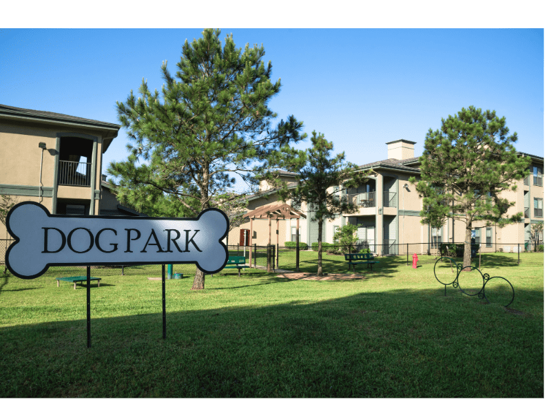

Discover the best indoor dog parks across Texas. Perfect for hot summer days, rainy weather, or year-round socialization in a safe, climate-controlled environment. From Houston to Austin, find the perfect indoor playground for your furry friend.

Discover the advantages of climate-controlled dog play facilities
Escape Texas heat and enjoy comfortable temperatures year-round. Perfect for hot summers and unpredictable weather.
Controlled access, professional supervision, and secure facilities ensure your dog's safety at all times.
Indoor agility courses, specialized play equipment, and training areas designed for optimal dog enrichment.
Structured playtime with other dogs in a controlled environment perfect for building social skills.
Never worry about rain, extreme heat, or cold weather canceling your dog's exercise and playtime.
Many facilities offer extended or 24/7 access, making it convenient for any schedule.
Maintain your dog's exercise routine regardless of outdoor conditions with reliable indoor access.
Professional training sessions and behavior classes available in controlled indoor environments.
Browse indoor dog parks in major Texas metropolitan areas
Discover climate-controlled dog facilities in America's 4th largest city. From Galleria to The Woodlands.
Find unique indoor dog experiences in the capital city, including coworking spaces for dogs and owners.
Premium indoor facilities in the Dallas metroplex with state-of-the-art amenities and training programs.
Indoor dog facilities in the Alamo City featuring specialized training areas and premium boarding services.
Cowtown's finest indoor dog facilities with spacious play areas and professional grooming services.
Discover indoor dog parks in Cypress, Spring, Conroe, Arlington, and other Texas communities.
Make the most of your indoor dog park experience